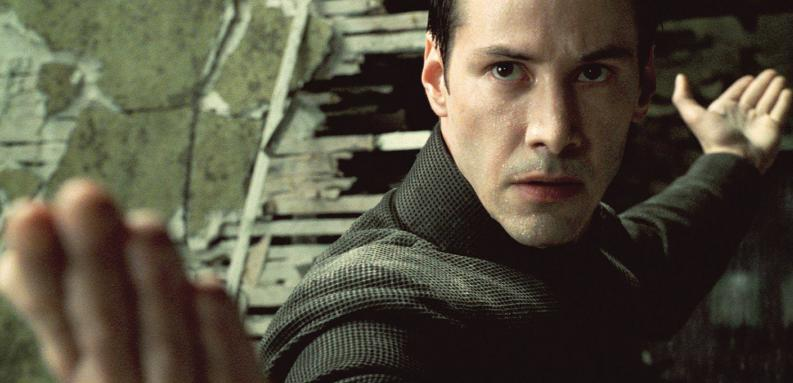
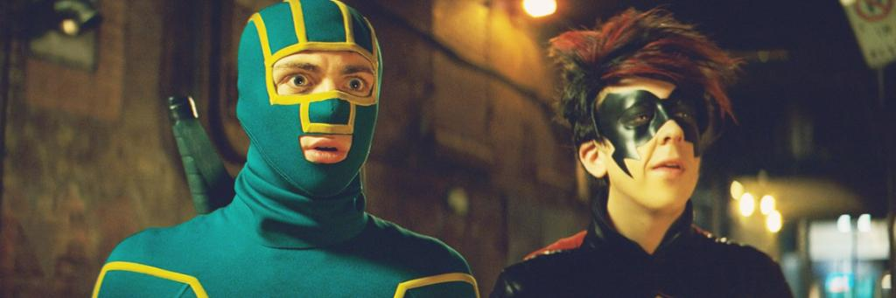

- 
- 
o
o
o
- Comedia
- Acción
2018
Deadpool 2
- Acción
- Ciencia ficción
1999
2018
1999
Más muy pronto...

Batman tiene que mantener el equilibrio entre el heroísmo y el vigilantismo para pelear contra un vil criminal conocido como el Guasón, que sumiría a Ciudad Gótica en la anarquía.
2008

Después de que otro incidente internacional, en el que se ven envueltos los Vengadores, produzca daños colaterales, la presión política obliga a poner en marcha un sistema para depurar responsabilidades.
2016

Aunque está decidido a vagar solo por el páramo post-apocalíptico, Mad Max se une a Furiosa, una comandante fugitiva, y su banda, quienes están tratando de escapar de un señor de la guerra.
2015

Dos androides del futuro intentan apoderarse de un adolescente que se convertirá en el salvador de la Tierra.
1991
Más muy pronto...